Case Study · Episode 10 · AI Filmmaking
VOO: the future, built from scraps
Voo is Portuguese for flight. At golden hour on a favela rooftop, fifteen-year-old Dé releases a drone he assembled from scavenged parts and watches it climb toward a gleaming skyline he's otherwise locked out of. One quiet, hopeful beat of grounded sci-fi — made end-to-end in Higgsfield's AI filmmaking pipeline as the capstone of their Academy course, with character, location and prop carried as reusable Elements into a single finished shot.
The hero shot · rendered in Seedance 2.0 with all three Elements attached — Dé's face,
the rooftop light and the hand-built drone hold consistent from first frame to last.
Overview
Consistency is the whole film
The hardest thing in AI film isn't a pretty frame — it's the same face, the same drone and the same light surviving from asset to final render. So the piece was built the way a director briefs a crew: pre-production first, every Element locked before a single second of video was generated, and one moment shot properly instead of thirty seconds of drift.
3Reusable Elements
70%Of a shot is its location
1Shot, done properly
100%Original — no brands, no IP
The Pipeline
Step by step
01
The Location
The course's loudest rule — locations set 70% of your shot's quality — decided the build order. The rooftop came first: terracotta and turquoise walls, water tanks, string lights, satellite dishes, and a future skyline glowing across the bay. Golden-hour amber against teal shadows, in the naturalistic spirit of César Charlone's photography on City of God.
The first take came back over-stylized — game-art gloss instead of documentary warmth. The fix was a model
switch and a prompt rewritten for photographic realism; the retake became the @Setting
Element every later prompt references.
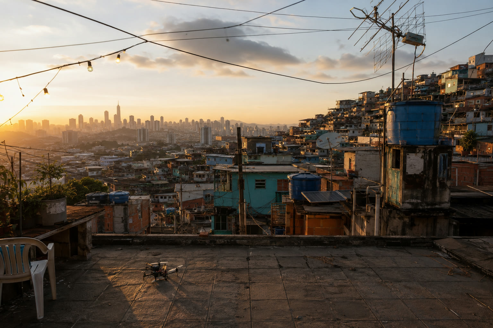
Fig. 1 — the location Element: the rooftop at golden hour, the drone already waiting
on the tiles, the future on the horizon.
02
The Character
Dé, around fifteen, a self-taught maker in a hand-me-down utility vest. Built in Soul 2.0 with a character reference sheet and the pipeline's hard rule: identity and motion stay separate. The character ID preserves who Dé is; the action prompt only ever describes what he does — so his face survives every generation untouched.
An early wardrobe pass wore a trademarked football kit and was flagged for IP eligibility. It was replaced with fully original clothing — and every prompt after that stated the originality rule out loud.
Soul 2.0 · @De_photo Identity ≠ motion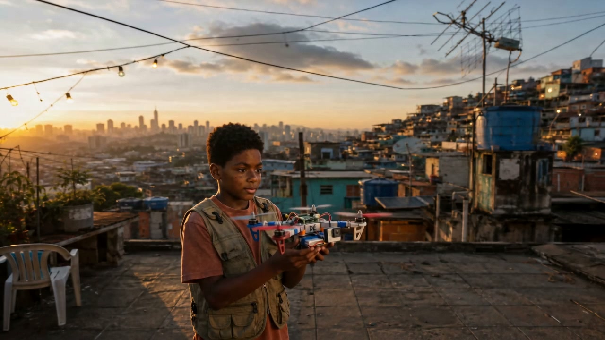
Fig. 2 — Dé in the finished shot, drone in hand: same face, same vest, same light
as the reference sheet.
03
The Prop
The drone is the story in object form — a quadcopter that looks genuinely hand-assembled, generated and detailed in Nano Banana Pro. Mismatched props, taped battery, a salvaged action cam, a friendship bracelet on one arm, and a painted Brazilian flag beside the name scrawled in marker: Dé.
It was built on the workbench first, as its own Element, then carried outside — same object, same scratches — onto the rooftop and into the air.
Nano Banana Pro · @Drone_animation Story in an objectProp brief (abridged)
A drone built by a fifteen-year-old from scavenged parts — mismatched propellers, zip-ties, taped battery pack, salvaged action cam, a hand-painted Brazilian flag and the name "Dé" in marker. Loved, repaired, flown daily. 100% original, no brands, no logos.
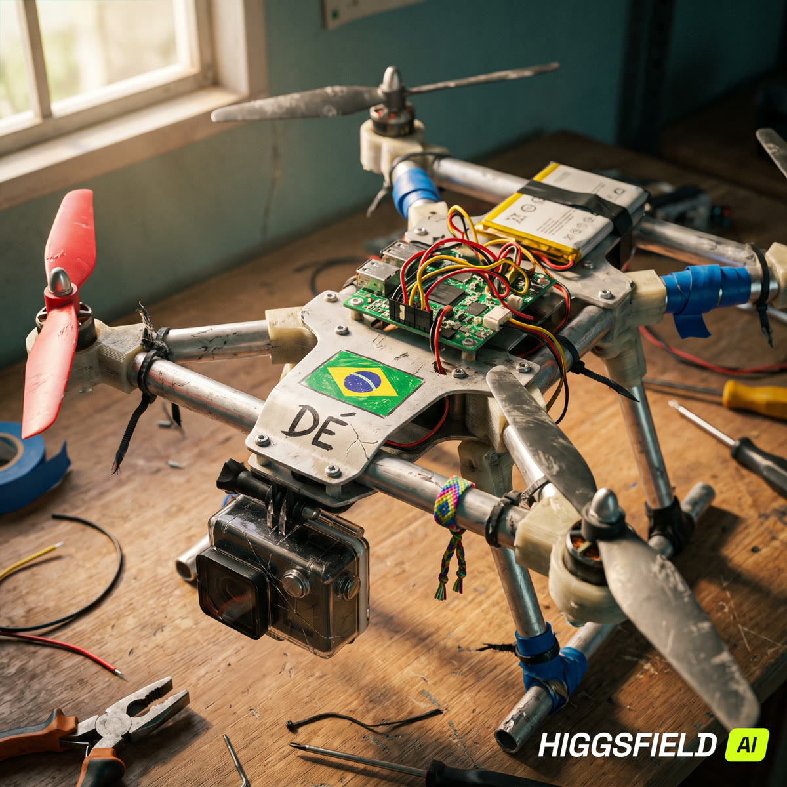
The prop Element
Fig. 3 — the drone on Dé's bench. Every scratch is a line of backstory.
04
The Shot
With all three Elements locked, the final beat was animated in Seedance 2.0 — character, location and prop attached as references, the action prompt carrying only the launch: hands open, the drone lifts, Dé's eyes follow it up toward the skyline.
Eight seconds, by design. A short beat held properly reads as a scene; a long one invites drift. Story first, then the technology — never the other way around.
Seedance 2.0 · final render Claude · prompt collaborator@De_photo
@Setting
@Drone_animation
Seedance 2.0
The hero shot
Fig. 4 — three Elements in, one consistent shot out. The pipeline is the film crew.
The Footage
One launch, frame by frame
Three moments from the finished eight seconds — the hold, the release, the rise. Watch the drone: the painted flag, the taped battery and the scrawled name stay legible in flight, which is exactly what the Elements system is for.
The hold
The release
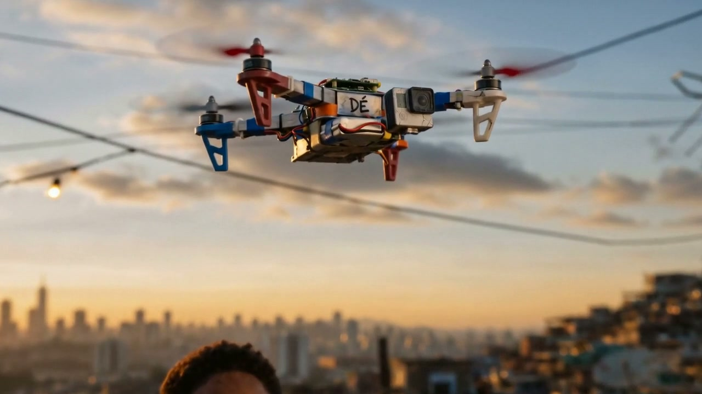
The rise
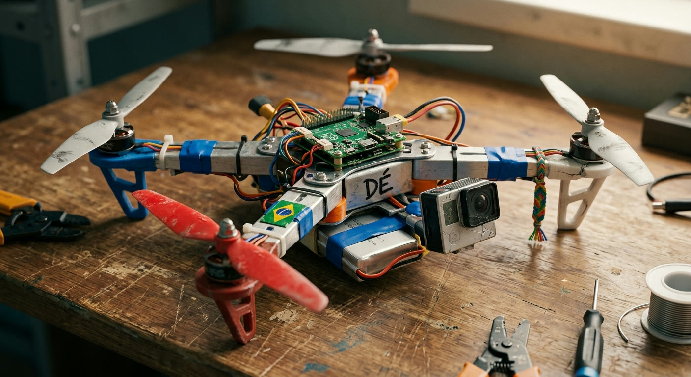
The Cutting Room Floor
The takes that didn't make it
Every one of these is a real generation from the project — beautiful, and wrong. The over-stylized first rooftop, the location scouts from other models, a younger Dé from an early character test. Keeping the outtakes is part of the discipline: a generation ledger tells you what a shot really cost.
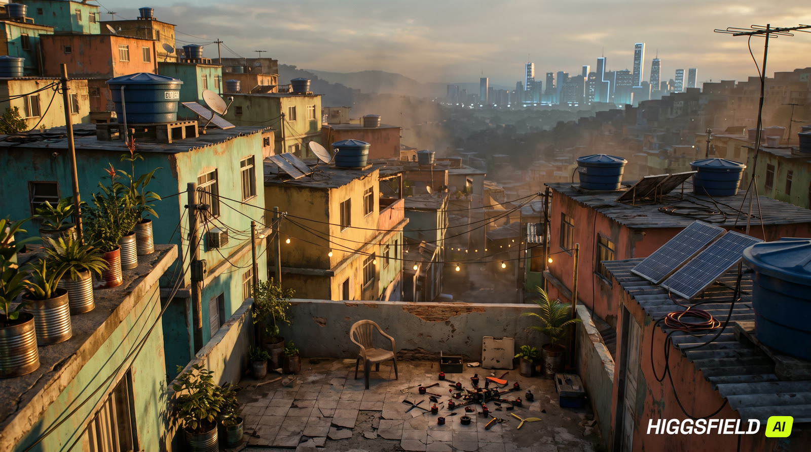
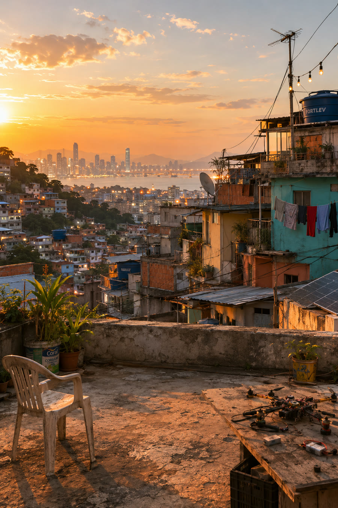
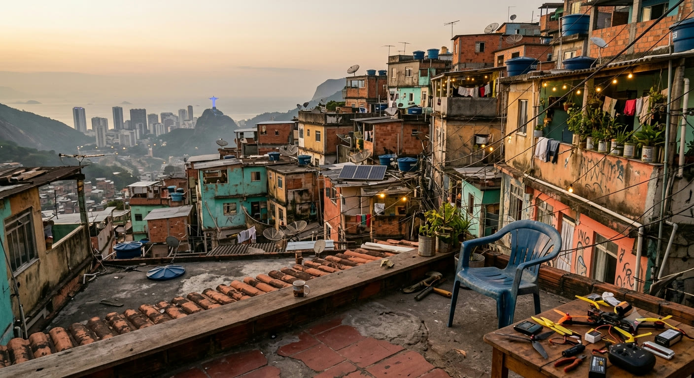
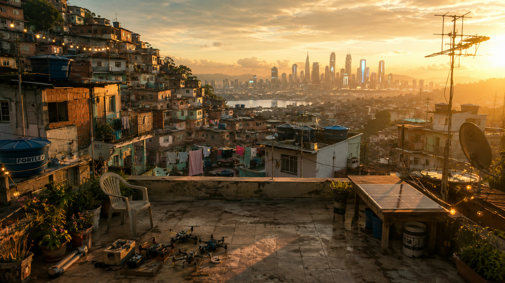
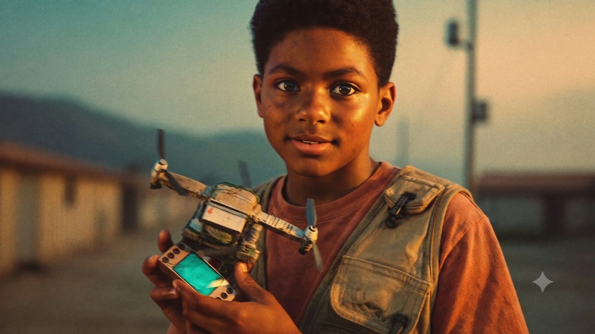
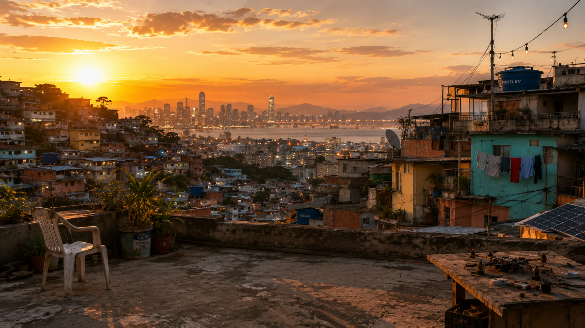
Top left — the "cartoony" first take that triggered the model
switch. Bottom left — the first Dé, before the character settled at fifteen.
Behind the Scenes
What we learned (and what nearly broke)
The honest notes — the parts a tidy tutorial leaves out.
Locations really are 70%
The first rooftop was rejected for game-art gloss, and the retake was the best money never spent — once the environment read as photographic, character and prop landed inside it almost for free. Build the world first; everything else inherits its light.
Say "original" before you're asked
One trademarked football kit triggered an
IP-eligibility flag and a wardrobe rebuild. Since then every prompt carries the rule explicitly:
100% ORIGINAL, ZERO IP — no brands, kits, logos or likenesses. Cheaper as a habit than as a fix.
Short is a choice, not a limit
Eight seconds that hold — face stable, drone consistent, light unbroken — read as cinema. The identity/motion separation in Soul 2.0 is what keeps a face from being rewritten by an action prompt.
Still open
Free-credit renders carry the platform watermark, so the showreel version needs a paid re-render — plus two companion shots for coverage (a tight reaction insert, a drone-rising POV) and a proper grade and sound pass.
Toolbox
Everything used, and what it did
Higgsfield Cinema Studio
The pipeline — Elements, director's panel
PLATFORMThe pipeline — Elements, director's panel
Soul 2.0
Dé — character identity & reference sheet
HIGGSFIELDDé — character identity & reference sheet
Nano Banana Pro
The hand-built drone prop
HIGGSFIELDThe hand-built drone prop
Seedance 2.0
The final animated shot
HIGGSFIELDThe final animated shot
Claude
Prompting & creative collaborator
CO-DIRECTORPrompting & creative collaborator
Higgsfield Academy
The AI Filmmaking Pipeline course — the playbook
THE METHODThe AI Filmmaking Pipeline course — the playbook